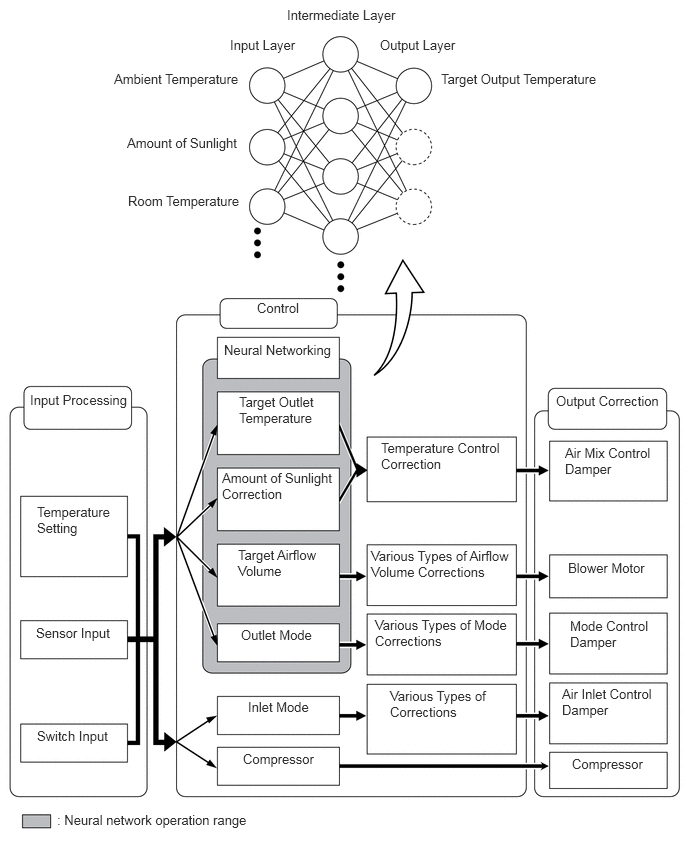

- Sends solar energy level difference, signals to the air conditioning amplifier assembly.
- Receives heater water pump operation request signals and sends operation signals to the semiconductor power integration ECU.*4
| Last Modified: 10-07-2025 | 6.11:8.1.0 | Doc ID: RM100000002KCEC |
| Model Year Start: 2024 | Model: Tacoma | Prod Date Range: [03/2024 - 11/2025] |
| Title: HEATING / AIR CONDITIONING: AIR CONDITIONING SYSTEM: AIR CONDITIONING CONTROL; 2024 - 2025 MY Tacoma Tacoma HV [03/2024 - 11/2025] | ||
AIR CONDITIONING CONTROL
FUNCTION OF MAIN COMPONENTS
(a) The air conditioning system consists of the following parts:
|
Component |
Function |
|---|---|
|
*1: Models with automatic air conditioning system
*2: Gasoline Models *3: HEV Models *4: Models with heater water pump (heater accessory assembly) *5: Models with PTC heater |
|
|
Air Conditioning Amplifier Assembly |
Transmits and receives data to and from the switches and sensors, and controls the air conditioning system. |
|
Evaporator Fin Sensor (No. 1 Cooler Thermistor) |
Detects the temperature of the cool air past the cooler evaporator sub-assembly and transmits the data to the air conditioning amplifier assembly. |
|
Cooler Thermistor (Room Temperature Sensor)*1 |
Detects the internal temperature inside the cabin and outputs that data to the air conditioning amplifier assembly. |
|
Cooler Thermistor (Ambient Temperature Sensor) |
Detects the ambient temperature and outputs it to the air conditioning amplifier assembly. |
|
Air Conditioner Pressure Sensor |
Detects the refrigerant pressure and sends the data to the air conditioning amplifier assembly. |
|
Solar Sensor (Automatic Light Control Sensor)*1 |
Detects the changes in the amount of solar energy and outputs them to the main body ECU (multiplex network body ECU). |
|
Blower Motor with Fan Sub-assembly |
Driven according to the target airflow volume calculated by the air conditioning amplifier assembly to blow air toward the cabin and circulate the air inside the cabin. |
|
Cooler Compressor Assembly*2 |
Performs suction, compression and discharge of refrigerant gas. |
|
Compressor with Motor Assembly*3 |
|
|
Heater Water Pump (Heater Accessory Assembly)*4 |
Controlled by the semiconductor power integration ECU to flow the engine coolant to the air conditioning unit. |
|
PTC Heater (Quick Heater Assembly)*5 |
Consists of a Positive Temperature Coefficient (PTC) element, an aluminum fin and a brass plate. |
|
Damper Servo Motors |
Controlled by the air conditioning amplifier assembly to move the mode control dampers, air mix control dampers and fresh/recirculation damper and switch the registers, outlet air temperature and air inlet mode. |
|
Air Conditioning Control Assembly |
Allows operation and adjustment of the air conditioning via switches. |
|
Combination Meter Assembly |
Sends the vehicle speed signal to the air conditioning amplifier assembly. |
|
Main Body ECU (Multiplex Network Body ECU) |
|
|
Semiconductor Power Integration ECU |
Operates the heater water pump according to heater water pump and compressor operation request signals received from the main body ECU (multiplex network body ECU). |
|
ECM |
Receives the signals from the engine coolant temperature sensor and transmits them to the air conditioning amplifier assembly. |
|
Power Steering ECU |
Sends the loading control level signal to the air conditioning amplifier assembly. |
|
Central Gateway ECU (Network Gateway ECU) |
Relays the signal between the CAN communication lines. |
SYSTEM CONTROL
(a) Control List
|
Control |
Function |
|---|---|
|
*1: Gasoline Models
*2: HEV Models *3: Models with PTC heater |
|
|
Neural Network Control |
This control is capable of performing complex control by artificially simulating the information processing method of the nervous system of living organisms in order to establish a complex input/output relationship that is similar to a human brain. |
|
Outlet Air Temperature Control |
Based on the temperature set by the temperature control switch, the neural network control calculates the outlet air temperature based on the input signals from various sensors. |
|
The temperature setting for the driver and front passenger is controlled independently in order to provide a separate vehicle interior temperature for the right and left sides of the vehicle. Thus, air conditioning control that accommodates occupant preferences has been achieved. |
|
|
Blower Control |
Controls the blower motor in accordance with the airflow volume that has been calculated by neural network control based on the input signals from various sensors. |
|
Automatically increases the blower level when the defroster is on. |
|
|
Air Outlet Control |
Automatically switches the air outlets in accordance with the outlet mode that has been calculated by neural network control based on the input signals from various sensors. |
|
In accordance with the engine coolant temperature, outside air temperature, amount of sunlight, required blower, outlet temperature and vehicle speed conditions, this control automatically switches the blower outlet to FOOT/DEF mode to prevent the windows from becoming fogged when the outside air temperature is low. |
|
|
Odor Suppression Control |
When the air conditioning system is started, the cooler compressor assembly*1 or compressor with motor assembly*2 is operated with the blower off for few seconds to cool the No. 1 cooler evaporator assembly. As a result, the odor inside the air conditioning unit is adsorbed in the water that forms on the surface of the evaporator. |
|
From few seconds after the system is started, the air outlet mode is set to FOOT mode and the blower operates at low speeds to discharge the air inside the air conditioning unit into the footwell. From few seconds after the system is started, the system returns to the previously set control mode. These controls prevent the air inside the air conditioning unit from blowing out toward the face area when the air conditioning system is started, reducing feelings of discomfort. Furthermore, delayed operation control timing for the blower can be changed using the customization function. For details, refer to the Repair Manual. |
|
|
Charge/Discharge Balance Management Load Control |
|
|
Air Inlet Control |
Automatically controls the air inlet control damper to achieve the calculated outlet air temperature that is required. |
|
Drives the No. 1 blower damper servo sub-assembly (fresh/recirculation damper) in accordance with the operation of the air inlet control switch and moves the dampers to the FRESH or RECIRC position. |
|
|
Cooler Compressor Control |
Through the calculation of the target evaporator temperature based on various sensor signals, the air conditioning amplifier assembly optimally controls the discharge capacity by regulating the opening extent of the solenoid control valve. |
|
Turns the air conditioning on automatically by pressing the AUTO button when the blower is on and the air conditioning is off. |
|
|
PTC Heater Control*3 |
When the ignition switch is ON and the blower motor is on, the air conditioning amplifier assembly turns on the PTC heater (quick heater assembly) if the following conditions are met.
|
|
ECO Drive Mode Control |
When set to ECO drive mode, the air conditioning amplifier assembly decreases the blower speed and switches air inlet mode to recirculate mode. |
|
Diagnosis |
A Diagnostic Trouble Code (DTC) is stored in memory when the air conditioning amplifier assembly detects a problem with the air conditioning system. |
(b) Neural Network Control
(1) In the previous automatic air conditioning system, the air conditioning amplifier assembly determined the required outlet air temperature and blower air volume in accordance with a calculation formula that had been obtained based on information received from the sensors. However, because the senses of a person are rather complex, a given temperature is sensed differently, depending on the environment in which the person is situated. For example, a given amount of solar radiation can feel comfortably warm in a cold climate, but extremely uncomfortable in a hot climate. Therefore, as a technique for performing a high level of control, a neural network is used in the automatic air conditioning system. With this technique, the data that has been collected under varying environmental conditions is stored in the air conditioning amplifier assembly, which effects control to provide enhanced air conditioning comfort.
(2) The neural network control consists of neurons in an input layer, an intermediate layer, and an output layer. The input layer neurons process the input data of the ambient temperature, the amount of sunlight and the room temperature based on the outputs of the switches and sensors, and output them to the intermediate layer neurons. Based on this data, the intermediate layer neurons adjust the strength of the links among the neurons. The sum of this data is then calculated by the output layer neurons in the form of the required outlet temperature, solar correction, target airflow volume and outlet mode control volume. Accordingly, the air conditioning amplifier assembly controls the servo motors and blower motor with fan sub-assembly in accordance with the control volumes that have been calculated by the neural network control.
(c) ECO Drive Mode Control
(1) During ECO drive mode, the air conditioning amplifier assembly restricts the air conditioning system performance under specified conditions, improving fuel economy.
(2) The ECO drive mode control is activated when the integration control and panel assembly (drive mode select) is operated, and then restricts the air conditioning system performance as described below:
|
Control |
Outline |
|---|---|
|
Inside/Outside Air Switch Control |
Automatically switches the air inlet port to the internal air circulation mode when the outside air temperature is equal to or higher than a predetermined temperature and reduces the power consumption. |
|
Blower Level Control |
Sets the blower level in AUTO mode lower than normal, and suppresses the power consumption. |
DIAGNOSIS
(a) In order to make system inspections easier to perform, a diagnosis function is used in consideration of serviceability. The Diagnostic Trouble Codes (DTCs) of malfunctions can be read by connecting the Global TechStream (GTS). For details, refer to the Repair Manual.